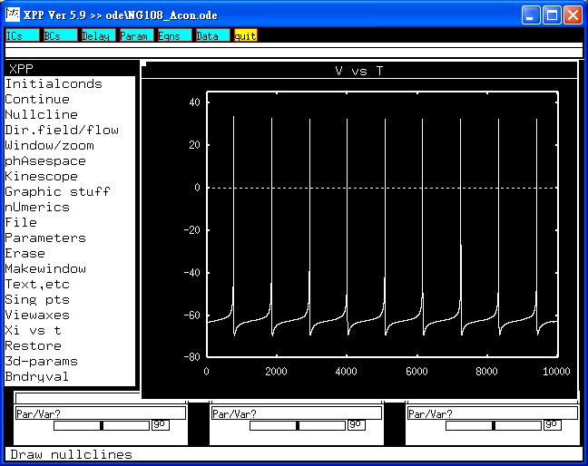

This is the readme for the model associated with the paper Lin MW, Wang YJ, Liu SI, Lin AA, Lo YC, Wu SN. Characterization of aconitine- induced block of delayed rectifier K+ current in differentiated NG108-15 neuronal cells. Neuropharmacology 2008; Feb 6; [Epub ahead of print] (doi:10.1016/j.neuropharm.2008.01.009) Abstract: The effects of aconitine (ACO), a highly toxic alkaloid, on ion currents in differentiated NG108-15 neuronal cells were investigated in this study. ACO (0.3-30 microM) suppressed the amplitude of delayed rectifier K+ current (IK(DR)) in a concentration-dependent manner with an IC50 value of 3.1 microM. The presence of ACO enhanced the rate and extent of IK(DR) inactivation, although it had no effect on the initial activation phase of IK(DR). It could shift the inactivation curve of IK(DR) to a hyperpolarized potential with no change in the slope factor. Cumulative inactivation for IK(DR) was also enhanced by ACO. Orphenadrine (30 microM) or methyllycaconitine (30 microM) slightly suppressed IK(DR) without modifying current decay. ACO (10 microM) had an inhibitory effect on voltage-dependent Na+ current (INa). Under current-clamp recordings, ACO increased the firing and widening of action potentials in these cells. With the aid of the minimal binding scheme, the ACO actions on IK(DR) was quantitatively provided with a dissociation constant of 0.6 microM. A modeled cell was designed to duplicate its inhibitory effect on spontaneous pacemaking. ACO also blocked IK(DR) in neuroblastoma SH-SY5Y cells. Taken together, the experimental data and simulations show that ACO can block delayed rectifier K+ channels of neurons in a concentration- and state-dependent manner. Changes in action potentials induced by ACO in neurons in vivo can be explained mainly by its blocking actions on IK(DR) and INa. ------- To run the models: XPP: start with the command xpp ode\NG108_Acon.ode Then select Initialconds -> Go. This simulation will make graph similar to figure 8A in the paper of Lin et al. x From Xi vs t, changes in g_Na and ACO (microM) makes graphis which resemble Figures 8B or 8C. Bard Ermentrout's website http://www.pitt.edu/~phase/ describes how to get and use xpp. These model files were submitted by: Ming-Wei Lin, Ya-Jean Wan, An-An Lin and Sheng-Nan Wu Institute of Basic Medical Sciences and Department of Physiology, National Cheng Kung University Medical Center Tainan 70101, Taiwan snwu@mail.ncku.edu.tw